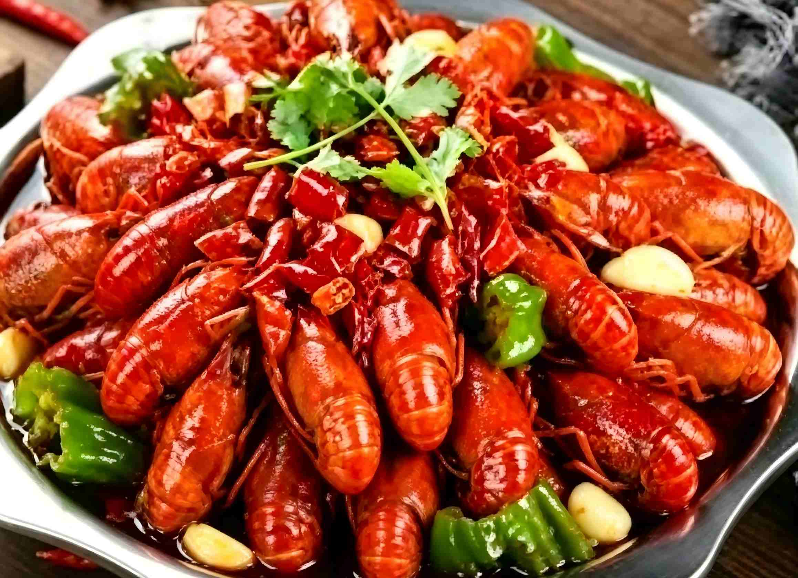

小龙虾学名克氏原螯虾，原产于北美，后传入中国。麻辣小龙虾是近年风靡全国的夜宵之王，以湖北潜江、江苏盱眙等地最为出名。小龙虾肉质鲜嫩Q弹，麻辣入味，是朋友聚会、夏日夜宵的绝佳选择。
1. 小龙虾清洗干净，用牙刷刷净腹部，抽去虾线
2. 锅中热油，爆香葱姜蒜、花椒、干辣椒
3. 加入小龙虾翻炒至变红，加入啤酒、生抽、老抽、盐、糖
4. 大火烧开后转小火焖煮15分钟，大火收汁即可
小龙虾头部虾黄富含营养，但虾线和虾头内脏需要去除干净。搭配冰镇啤酒或碳酸饮料，解辣效果最佳。